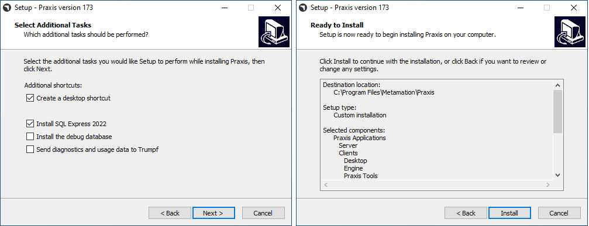

Palvelimen asennus
Noudata ohjeita asentaaksesi TruSmartCAM-palvelimen yhdessä SQL:n kanssa.
|
Järjestelmänvalvojan oikeudet
Tämän asennuksen suorittamiseen käyttäjällä on oltava järjestelmänvalvojan oikeudet. |
-
Suorita Setup.TruSmartCAM.<version>.exe aloittaaksesi asennuksen.
| Versio on numero. |
-
Lue käyttöoikeussopimus ja valitse I accept the agreement ja napsauta sitten Seuraava .

Vaihe 1 : Asennussijainti
-
Ilmoita asennushakemisto tai hyväksy asennuksen oletusarvo
C:\Program Files\Metamation\Praxisja napsauta Seuraava.-
C:\Program Files\Metamation\Praxis- Asennuskansiossa on seuraavat kansiot: Bin, MetaCAM, Samples ja Tracker. -
C:\Program Data\Metamation- Datakansiossa on seuraavat kansiot: TruSmartCAM, TecZone ja MetaCAM.
-

Vaihe 2 : Komponenttien valinta
| Asennustyyppi | Komponentit |
|---|---|
Full |
Server + Desktop client + Engine |
Client |
Desktop Client |
Server |
Server + Desktop client |
Station |
Valitsee kaikki asemapäätteet kuten TecZone, MetaCAM, RightAngle(Bend Controller), Vulcan(Laser Machine Controller) |
Custom |
Käyttäjän valitsema. |
-
Valitse Full Installation. Valitse Code Senders ja Bend Code Senders TruSmartCAM Tools -kohdasta. Nyt asennustyyppi muuttuu muotoon Mukautettu. Napsauta Seuraava.

Vaihe 3 : Valitse Install SQL Server
|
SQL Express 2022 -asennus on tarpeen vain TruSmartCAM-palvelimelle. Tämä vaihtoehto ei ole käytettävissä Client- ja Sync-asennuksissa. Tämä on myös valittuna JA asennettuna ensimmäisellä kerralla, ja se voidaan ohittaa sen jälkeen. Jos TruSmartCAM-palvelimeen on jo asennettu SQL, käyttäjä voi ohittaa vaiheen 3. |
-
Select Additional Tasks -kohdassa: Napsauta Install SQL Express ja napsauta Seuraava.
-
Ready to Install -kohdassa: Tiivistä kaikki asennusominaisuudet ja napsauta Install.

Vaihe 4 : SQL Server -asennus
Kun TruSmartCAM-komponentit on asennettu, asennusohjelma jatkaa SQL-palvelimen asennukseen. Hyväksy käyttöoikeussopimus jatkaaksesi ja asenna SQL Express oletusasetuksilla.

Kun asennus on valmis, napsauta Close ja viimeistele asennus.

| Windows-versiosta riippuen SQL-asennuksen sulkeminen saattaa kehottaa uudelleenkäynnistykseen. |
Vaihe 5 : Windows-työpöydän pikakuvakkeet
-
Jos järjestelmä ei käynnisty uudelleen SQL-asennuksen jälkeen, valitse Launch TruSmartCAM -valintaruutu ja napsauta Finish.
-
Jos järjestelmä käynnistyy uudelleen, käynnistä TruSmartCAM-pikakuvake työpöydältä tai kirjoita TruSmartCAM Windows Start Program -valikkoon ja Suorita järjestelmänvalvojana.
| Palvelimen asennus: TruSmartCAM ja TruSmartCAM License -pikakuvakkeet ovat käytettävissä työpöydällä. + Client/SYNC-asennus: Vain TruSmartCAM-pikakuvake on käytettävissä työpöydällä. |

Vaihe 6 : Lisenssin rekisteröinti
-
Serial Number -kenttään kirjoita Trumpf Metamation Service Team -tiimin toimittama TruSmartCAM Serial key. Kirjoita <Yrityksen nimi> "Registered to" -kenttään ja sähköpostiosoite. Napsauta OK.

|
Jos verkon palomuuri estää lisenssin rekisteröinnin tai TruSmartCAM-palvelintietokoneessa ei ole Internet-yhteyttä, TruSmartCAM-lisenssi suoritetaan offline-aktivoinnilla. Lähetä Prax.request C:\ProgramData\Metamation\Praxis -kansiosta Trumpf Metamation Service Team -tiimille sähköpostilla. Trumpf Metamation -tiimi toimittaa Prax.lock -tiedoston, joka on pudotettava tähän kansioon. |
Vaihe 7 : Ensimmäinen kertakonfiguraatio
-
Kirjoita tietokannan nimi ja aseta tiedon tallennussijainti. Valitse Käytä SQL-palvelinta -valintaruutu ja valitse SQL-palvelimen nimi yhdistääksesi tietokantaan. Napsauta OK.

-
TruSmartCAM Desktop Client avautuu näyttäen Database Connection Succeeded alhaalla alareunassa.
-
TruSmartCAM, TecZone ja MetaCAM -konfiguraatiotiedostot luotiin oletusmäärityskoneiden tai TruSmartCAM-lisenssikoneiden mukaan. Sama konfiguraatio jaetaan kaikkien TruSmartCAM-asiakkaiden kesken.

Tervetuloa-näyttö näyttää Windows-käyttäjän kirjautumisnimen TruSmartCAM-kirjautumistunnuksena ja nimena. Ensimmäistä TruSmartCAM-käyttäjää pidetään Sivuston ylläpitäjä-käyttäjänä. Anna sähköposti ja salasana. Napsauta OK .
Valitse Muista minut -valintaruutu tallentaaksesi kirjautumistiedot seuraavaa kertaa varten. Muista minut -valintaruudun tyhjentäminen kehottaa kirjautumis- ja salasanakehote aina, kun TruSmartCAM-sovellus käynnistetään.

Vaihe 8 : TruSmartCAM-kirjautuminen
-
Sulje TruSmartCAM ja avaa se uudelleen. Järjestelmä kehottaa sinua antamaan TruSmartCAM -kirjautumistiedot.

-
Kirjautunut käyttäjänimi näytetään käyttäjäkuvakkeen vieressä TruSmartCAM -sovelluksen otsikossa.

-
Kun viet hiiren käyttäjäkuvakkeen päälle, järjestelmä näyttää:

-
Käyttäjäroolin (esimerkiksi: Programmer, Admin).
-
Pikakuvakkeen uloskirjautumiseen: Ctrl+L.
-
-
Käyttäjäkuvakkeen napsauttaminen avaa valikon, jonka avulla voit:

-
Muokkaa tietoja… - Päivitä profiilitietosi.
-
Vaihda salasana… - Vaihda tilisi salasana.
-
Kirjaudu ulos - Kirjaudu ulos sovelluksesta.
-
Peruuta - Sulje valikko tekemättä muutoksia.
-
Vaihe 9 : Tehdaskoneen konfiguraatio
-
TruSmartCAM-lisenssi [Kaikki koneet mahdollistavat lisenssibitti]: Oletus TruSmartCAM-kone ja materiaali katsotaan tehdasmäärityksenä.
-
TruSmartCAM-lisenssi [Ei demoa ja muutama konebitti käytössä]: Nuo muutamat koneet ja oletusmateriaali katsotaan tehdasmäärityksenä.
-
(Open → Import) uusi osa kansiosta
C:\Program Files\Metamation\Praxis\Samples\Partsja tarkista, onko osa tuotu onnistuneesti.

Huomautus 1 : TruSmartCAM Monitor
-
TruSmartCAM Monitor Engine-asennuksen kanssa (Site admin -oikeudet):
-
TruSmartCAM Monitor Engine-asennuksen kanssa yhdessä Site Admin TruSmartCAM -oikeuksien kanssa on seuraavat vaihtoehdot:
-
Push TruSmartCAM -konfiguraatio, TecZone, MetaCAM -konfiguraatio kaikkiin TruSmartCAM -asiakkaisiin. Myös oikeudet luoda uusi TruSmartCAM-käyttäjän kirjautuminen.
-
Show Agents näyttää käytettävissä olevien moottoreiden kokonaismäärän automatiikkatehtäviin, joka on TruSmartCAM-lisenssin mukainen.
-
-

-
TruSmartCAM Monitor ilman Engine-asennusta (Site admin -oikeudet):

-
TruSmartCAM Monitor ilman Engine-asennusta (Ei Site Admin -oikeuksia):

|
TruSmartCAM-sovellusta suorittavassa tietokoneessa on oltava Engine TruSmartCAM -komponentti asennettuna [Palvelintietokoneessa tai missä tahansa asiakasohjelmassa]. Engine TruSmartCAM -komponentti asennetun tietokoneen tulisi olla käynnissä 24x7 kaikkien automatiikkatehtävien suorittamiseen. |
Huomautus 2 : Lock Tracker
-
Napsauta TruSmartCAM-palvelimen työpöydällä käytettävissä olevaa TruSmartCAM License -pikakuvaketta. Vaihtoehtoisesti avaa http://localhost:7171/metamation/locktrack url missä tahansa web -selaimessa.
Tämä avaa Lock Tracker -moduulin, jossa on lisenssitiedot, TruSmartCAM:n nykyiset istuntotiedot ja loki.
LockTracker HOME Page : Tämä näyttää TruSmartCAM-sarjanumeron, sarjan vanhentumisen tiedot ja saatavilla olevat sarjabitit.

LockTracker SESSIONS Page : Nykyiset TruSmartCAM-palvelimen yhdistämistiedot kuten TruSmartCAM Desktop client -tietokone, PMonitor, PEngine-tila.

LockTracker LOGs Page : TruSmartCAM-asiakkaan aloitus ja uloskirjautuminen | Pmonitor-käynnistys ja PEngine-yhdistä/katkaise-tila jne. voidaan tarkastella tällä Logs-sivulla.

Huomautus 3 : OpenGL
-
TruSmartCAM-sovellus sulkeutuu heti avautumisen yhteydessä, eikä myöskään pmonitor näy tehtäväpalkissa.
-
Tämä edustaa OpenGl-ongelmaa.
-
Toinen tapa vahvistaa tämä: Avaa C:\Program Files\Metamation\Praxis\Bin\Flux.exe, joka näyttää virheilmoituksen OpenGL-ongelmasta.

-
Päivitä C:\ProgramData\Metamation\Praxis\Prax.ini, options-osio GLVersion=1-asetuksella, jotta TruSmartCAM-sovellus avautuu onnistuneesti.
[Options]
GLVersion=1.0